Os músculos são órgãos constituídos principalmente por tecido muscular, especializado em contrair e realizar movimentos, geralmente em resposta a um estímulo nervoso.
Os músculos podem ser formados por três tipos básicos de tecido muscular:
Músculo liso: Está presente em diversos órgãos internos.
Músculo estriado esquelético: Permitem os movimentos dos diversos ossos e cartilagens.
Músculo estriado cardíaco: Este tipo de tecido muscular forma a maior parte do coração dos vertebrados.
O músculo cardíaco é involuntário, ele é controlado pelo sistema nervoso autônomo.
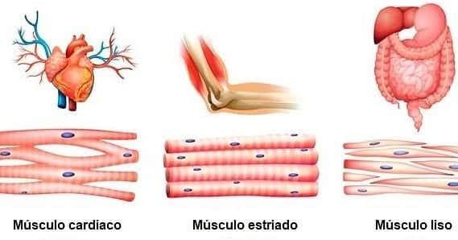
A contração dos músculos lisos é geralmente involuntária, ao contrário da contração dos músculos esqueléticos.
Tem sua contração mediada pelo sistema nervoso autônomo, ou seja, por isso realizam movimentos involuntários.
As células musculares lisas são uninucleadas e os filamentos de actina e miosina se dispõem em hélice em seu interior, sem formar padrão estriado como o tecido muscular esquelético.
Está presente em diversos órgãos internos.
É constituído por fibras fusiformes dotadas de um núcleo alongado e central.
Essas fibras, de contração lenta e involuntária, ocorrem organizando certos músculos, como os do tubo digestivo (esôfago , estômago e intestino) e dos vasos sanguíneos.
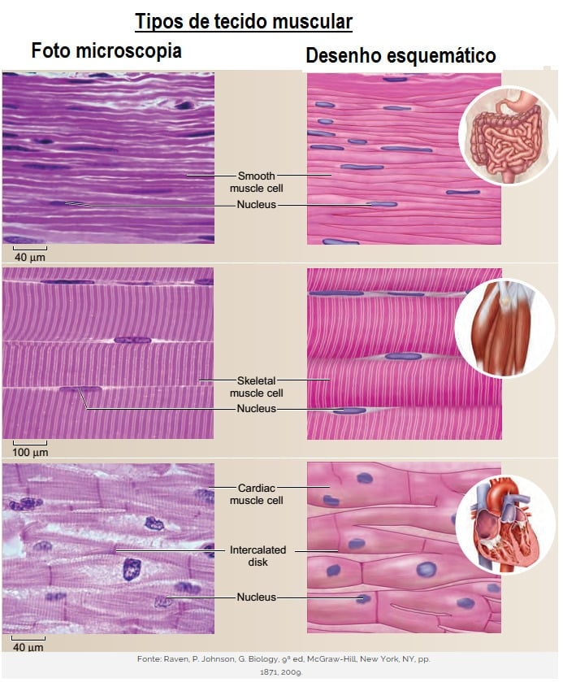
É inervado pelo sistema nervoso central e, como este se encontra em parte sob controle consciente, chama-se músculo voluntário.
As contrações do músculo esquelético permitem os movimentos dos diversos ossos e cartilagens do esqueleto.
Apresenta, sob observação microscópica, os sarcômeros, faixas alternadas transversais, claras e escuras.
Essa estriação resulta do arranjo regular de microfilamentos formados pelas proteínas actina e miosina, responsáveis pela contração muscular.
A célula muscular estriada chamada fibra muscular, possui inúmeros núcleos e pode atingir comprimentos que vão de 1mm a 60 cm.
O sistema muscular esquelético constitui a maior parte da musculatura do corpo, formando o que se chama popularmente de “carne”.
Essa musculatura recobre totalmente o esqueleto e está presa aos ossos, sendo responsável pela movimentação corporal.
Os componentes que formam o músculo estriado esquelético são:
Ventre;
Tendão ou aponeurose (quando tiver forma mais “alargada”).
O ventre é a parte avermelhada do músculo, e formado principalmente por células musculares, é a parte responsável por realizar a contração.
Cada célula muscular presente no ventre (e somente no ventre já que não existem células deste tipo nos tendões) é revestida por uma membrana chamada endomísio; ao se juntar com outras iguais a ela, esta célula muscular forma um grupo de células chamado fascículo muscular, o qual é revestido por uma membrana denominada perimísio.
Por fim, o ventre muscular (revestido pelo epimísio) é formado por um conjunto de fascículos.
Os revestimentos endomisio, perimísio e epimísio continuam além do ventre muscular, dando origem assim ao tendão ou aponeurose.
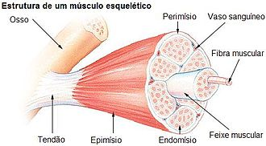
As fibras musculares esqueléticas tem o citoplasma repleto de filamentos longitudinais muito finos, (as miofibrilas) constituídas por microfilamentos das proteínas actina e miosina.
A disposição regular dessas proteínas ao longo da fibra produz o padrão de faixas claras e escuras alternadas, típicas do músculo estriado.
As unidades de actina e miosina que se repetem ao longo da miofibrila são chamadas sarcômeros.
As faixas mais extremas do sarcômero, claras, são denominadas banda I e contém filamentos de actina.
A faixa central mais escura é a banda A, as extremidades desta são formadas por filamentos de actina e miosina sobrepostos, enquanto sua região mediana mais clara, (a banda ou zona H), contém miosina.
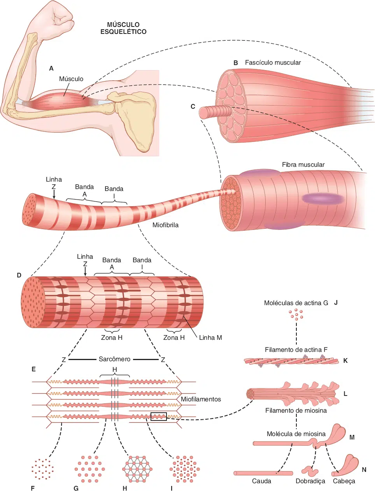
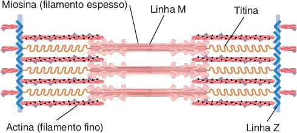
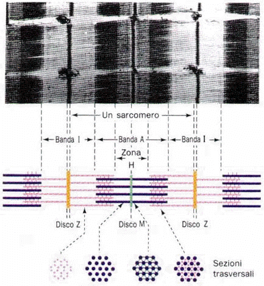
Os sarcômeros são constituidos principalmente por dois tipos de filamentos:
Filamento espesso ou grosso
É composto pela proteína miosina (mais especificamente miosina II).
Filamento fino
É formado por monômeros de actina, nebulina, tropomiosina e troponina.
Além destes filamentos, está presente uma proteína gigante denominada titina, que possui um alto grau de elasticidade.
A sua função é a de evitar que ocorra um estiramento excessivo do músculo.
E fixa a miosina ao disco Z.
Quando o músculo se contrai, as bandas I e H diminuem de largura.
A contração muscular se dá pelo deslizamento dos filamentos de actina sobre os de miosina.
Essa idéia é justamente conhecida como teoria do deslizamento dos filamentos.
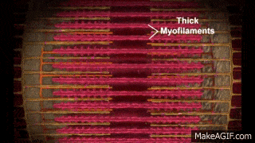
Nas pontas dos filamentos de miosina existem pequenas projeções, capazes de formar ligações com certos sítios dos filamentos de actina quando o músculo é estimulado.
As projeções da miosina puxam os filamentos de actina como dentes de uma engrenagem, forçando-os a deslizar sobre os filamentos de miosina, o que leva ao encurtamento das miofibrilas e à consequente contração da fibra muscular.
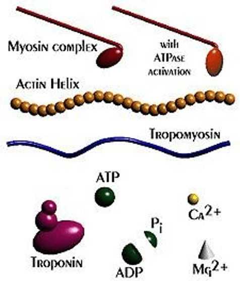
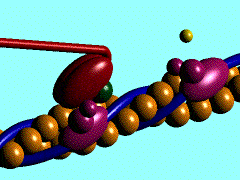
O estímulo para a contração é geralmente um impulso nervoso que se propaga pela membrana das fibras musculares, atingindo o retículo sarcoplasmático (um conjunto de bolsas membranosas citoplasmáticas onde há cálcio armazenado), que libera íons de cálcio no citoplasma.
Ao entrar em contato com as miofibrilas, o cálcio entra em contato com a troponina e desbloqueia os sítios de ligação de actina, permitindo que se ligue a miosina, iniciando a contração muscular.
Assim que cessa o estímulo, o cálcio é rebombeado para o interior do retículo sarcoplasmático e cessa a contração muscular.
A energia para contração muscular é suprida por moléculas de ATP (produzidas durante a respiração celular).
O ATP atua na ligação de miosina à actina, o que resulta na contração muscular.
Mas a principal reserva de energia nas células musculares é a fosfocreatina, onde grupos de fosfatos, ricos em energia, são transferidos da fosfocreatina para o ADP, que se transforma em ATP.
Quando o trabalho muscular é intenso, as células musculares repõem seus estoques de ATP e de fosfocreatina, intensificando a respiração celular, utilizando o glicogênio como combustível.
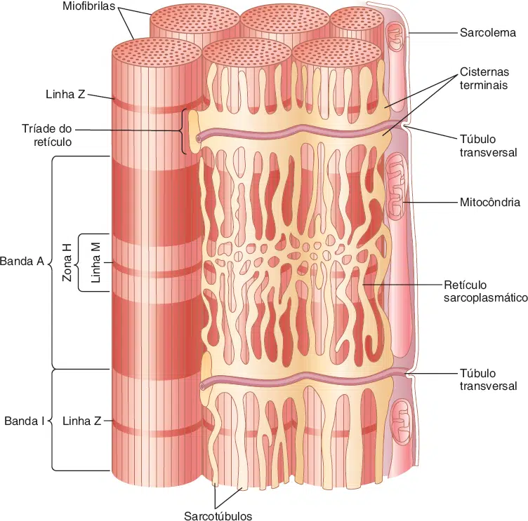
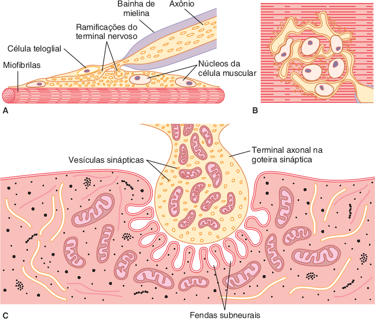
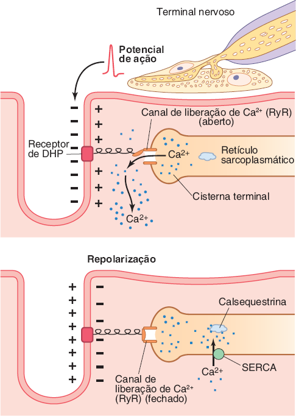
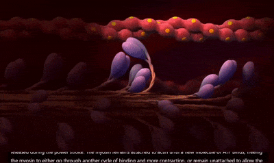
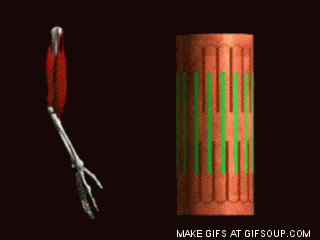
A estimulação contínua faz com que o músculo atinja um grau máximo de contração, o músculo permanece contraído, condição conhecida como tetania.
É um distúrbio caracterizado por contrações musculares tônicas intermitentes, acompanhadas de tremores, paralisias e dores musculares.
A tetania não é uma doença, mas um sintoma que pode ocorrer em diversas doenças e condições médicas.
A estimulação contínua do músculo faz com que ele permaneça contraído.
Uma tetania muito prolongada ocasiona a fadiga muscular.
Um músculo fadigado, após se relaxar, perde por um certo tempo, a capacidade de se contrair.
Pode ocorrer por deficiência de ATP, incapacidade de propagação do estímulo nervoso através da membrana celular ou acúmulo de ácido lático.
Têm fibras paralelas, frequentemente com uma aponeurose.
Ex: M. oblíquo externo do abdome (músculo plano largo).
O M. sartório é um músculo plano estreito com fibras paralelas.
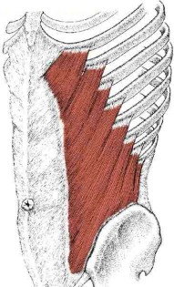
São semelhantes à penas na organização de seus fascículos, e podem ser semipeniformes,
peniformes ou multipeniformes.
Ex: M. extensor longo dos dedos (semipeniforme).
M. reto femoral (peniforme).
e M. deltoide (multipeniforme).
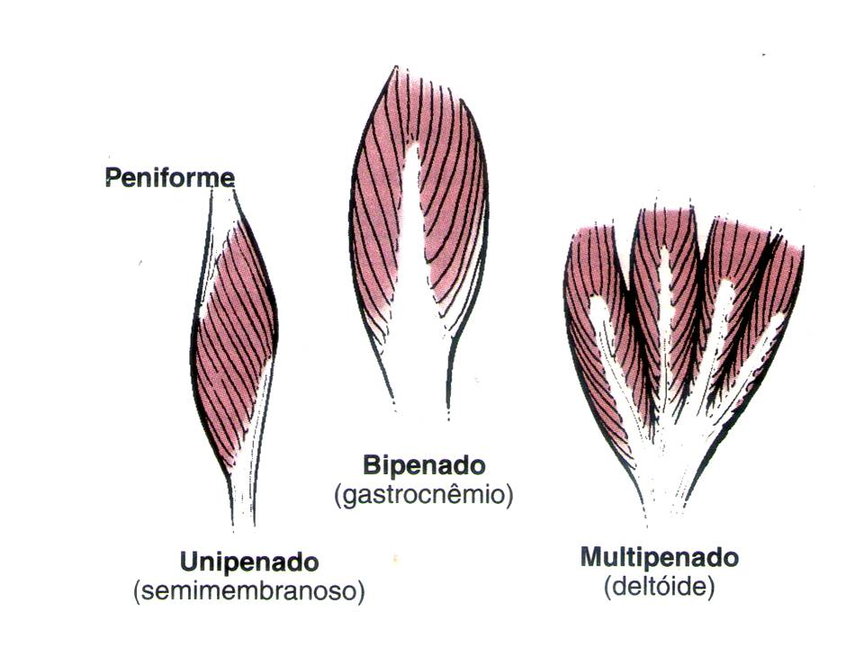
Têm formato de fuso com um ou mais ventres redondos e espessos, de extremidades afiladas.
Ex: M. bíceps braquial.
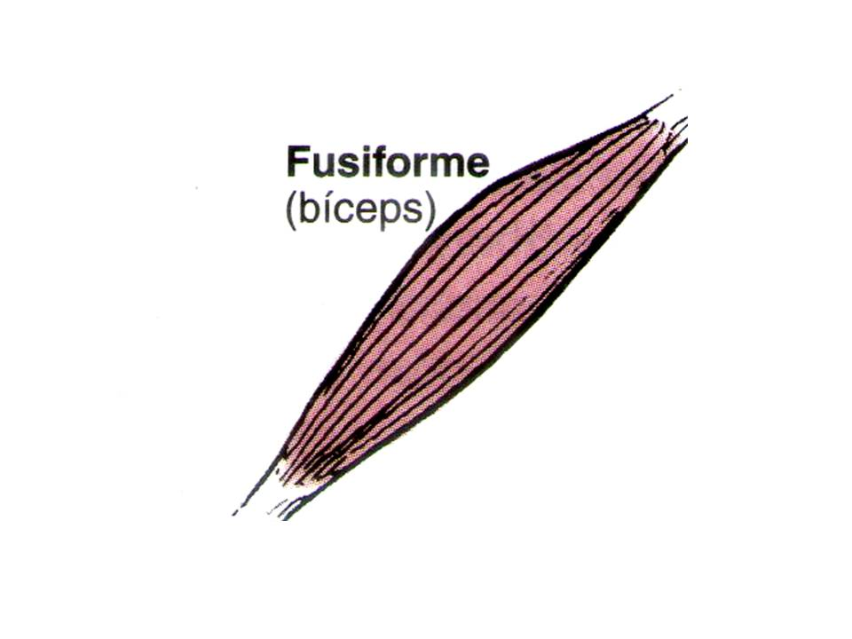
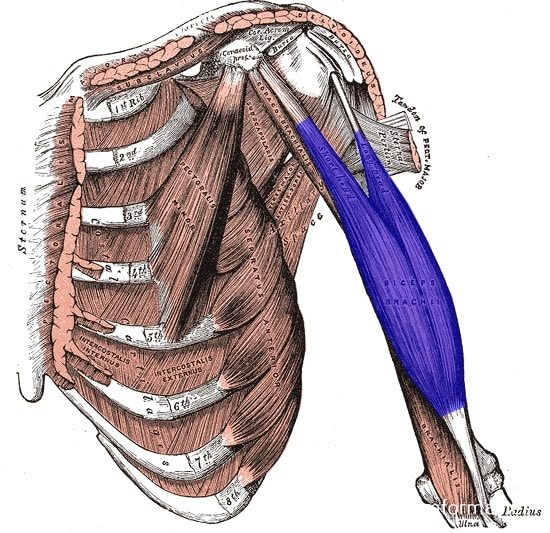
Circundam uma abertura ou orifício do corpo, fechando-os quando se contraem.
Ex: M. orbicular da boca (fecha a boca).
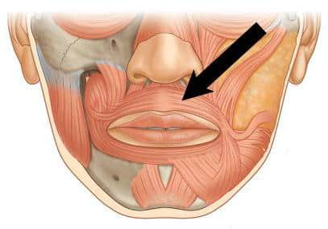
Têm quatro lados iguais.
EX: M. reto do abdome entre suas interseções tendíneas.
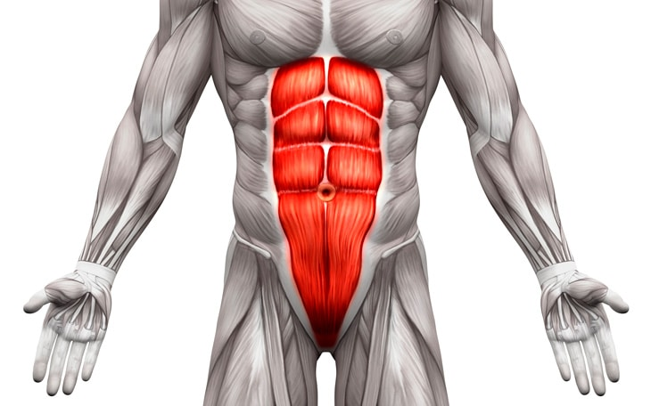
Originam-se em uma área larga e convergem para formar um único tendão.
Ex: M. peitoral maior.
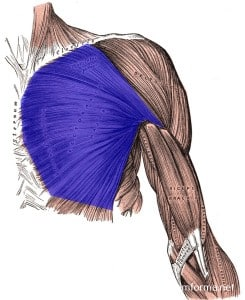
Têm mais de uma cabeça de inserção ou mais de um ventre contrátil, respectivamente.
Os músculos bíceps têm duas cabeças de inserção (p. ex., M. bíceps braquial);
Os músculos tríceps têm três cabeças de inserção (p. ex., M. tríceps braquial);
Os mm. digástrico e gastrocnêmio têm dois ventres (no primeiro, a organização é em série; no segundo, em paralelo).
A movimentação de uma parte do corpo depende da ação de músculos que atuam agonicamente e antagonicamente.
Por exemplo, a contração do músculo bíceps e o relaxamento do tríceps, provocam a flexão do membro superior.
Agonistas: São os músculos principais que ativam um movimento específico do corpo, eles se contraem ativamente para produzir um movimento desejado.
Antagonistas: Músculos que se opõem à ação dos agonistas, quando o agonista se contrai, o antagonista relaxa progressivamente, produzindo um movimento suave.
Sinergistas: São aqueles que participam estabilizando as articulações para que não ocorram movimentos indesejáveis durante a ação principal.
Fixadores: Estabilizam a origem do agonista de modo que ele possa agir mais eficientemente.
Estabilizam a parte proximal do membro quando move-se a parte distal.
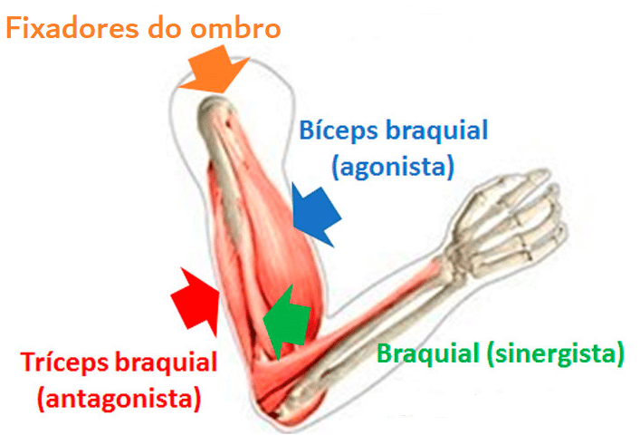
As fibras musculares esqueléticas diferem quanto ao tempo que levam para se contrair, podendo levar um tempo de até 5 vezes maior do que as rápidas para se contrair.
As fibras musculares lentas ou Tipo I = estão adaptadas à realização de trabalho contínuo, possuem maior quantidade de mitocôndrias, maior irrigação sanguínea e grande quantidade de mioglobina, capaz de estocar gás oxigênio.
As fibras rápidas ou Tipo II = são pobres em mioglobina, estão presentes em músculos adaptados à contrações rápidas e fortes.
Esses dois tipos de fibras podem ser diferenciados apenas ao microscópio por meio de corantes especiais.
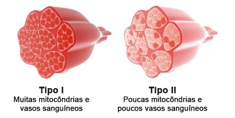
Quando um músculo contrai e encurta, uma de suas extremidades geralmente permanece fixa, enquanto a outra extremidade (mais móvel) é puxada em direção a ele, resultando em movimento.
A origem geralmente é a extremidade proximal do músculo e que permanece fixa durante a contração, ou seja, é a extremidade presa ao osso que não se desloca (ponto fixo).
A inserção é a extremidade distal do músculo que se movimenta durante a contração, ou seja, é a extremidade presa ao osso que se desloca (ponto móvel).
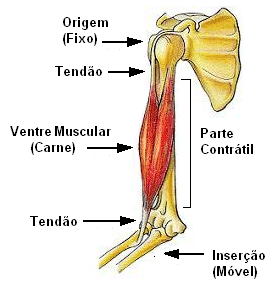
Lâmina de tecido fibroso na qual se fixam alguns músculos, e separam os ventres.
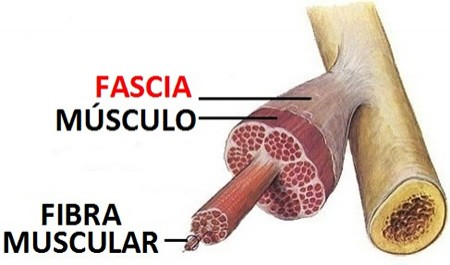
É um tecido fibroso cuja função é estabilizar um tendão, por exemplo, no local correto.
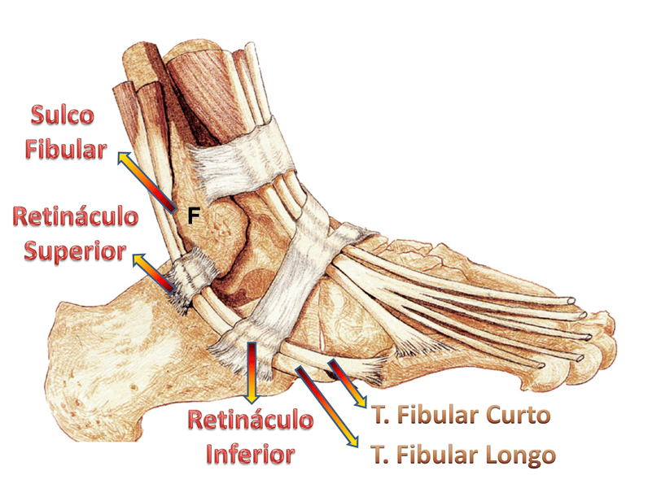
Feixe fibroso que liga entre si os ossos articulados ou mantém os órgãos nas respectivas posições.
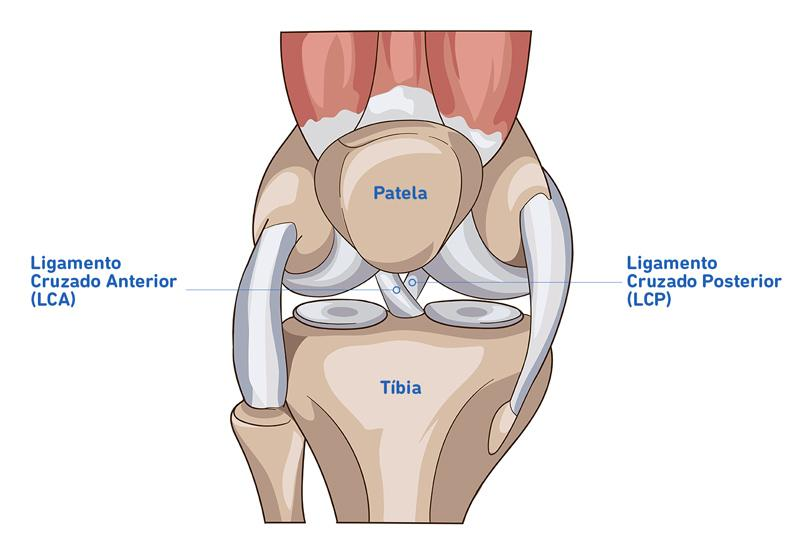
É uma estrutura formada por tecido conjuntivo.
Membrana que envolve grupos musculares.
Geralmente apresenta-se em forma de lâminas ou em leques.
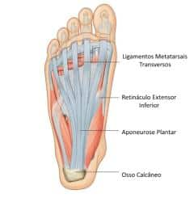
São estruturas do tipo fibrosa (marcação azul) e sinovial (marcação vermelha) que formam pontes ou túneis entre as superfícies ósseas sobre as quais deslizam os tendões.
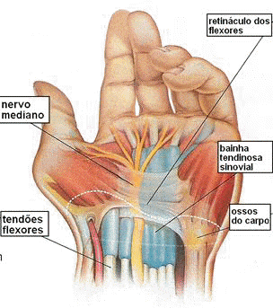
São encontradas entre os músculos ou entre um músculo e um osso.
São pequenas bolsas forradas por uma membrana serosa que possibilitam o deslizamento muscular.
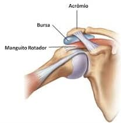
Os músculos mantêm-se normalmente em um estado de contração parcial, o tônus muscular, que é causado pela estimulação nervosa, e é um processo inconsciente que mantém os músculos preparados para entrar em ação.
Quando o nervo que estimula um músculo é cortado, este perde tônus e se torna flácido.
Estados de tensão emocional podem aumentar o tônus muscular, causando a sensação física de tensão muscular.
Nesta condição, gasta-se mais energia que o normal e isso causa a fadiga.
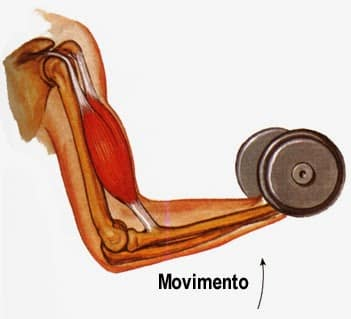
a) Contração Concêntrica: o músculo se encurta e traciona outra estrutura, como um tendão, reduzindo o ângulo de uma articulação.
b) Contração Excêntrica: quando aumenta o comprimento total do músculo durante a contração.
c) Contração Isométrica: servem para estabilizar as articulações enquanto outras são movidas.
É responsável pela postura e sustentação de objetos em posição fixa.
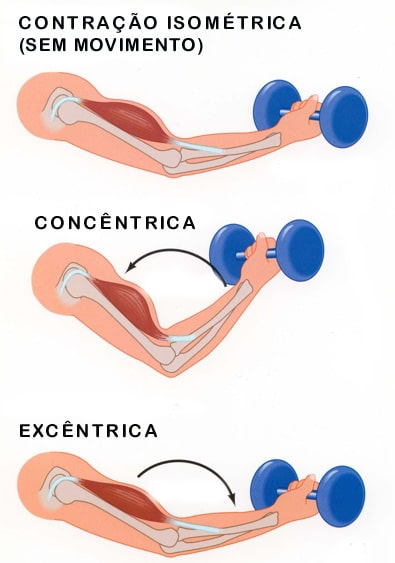